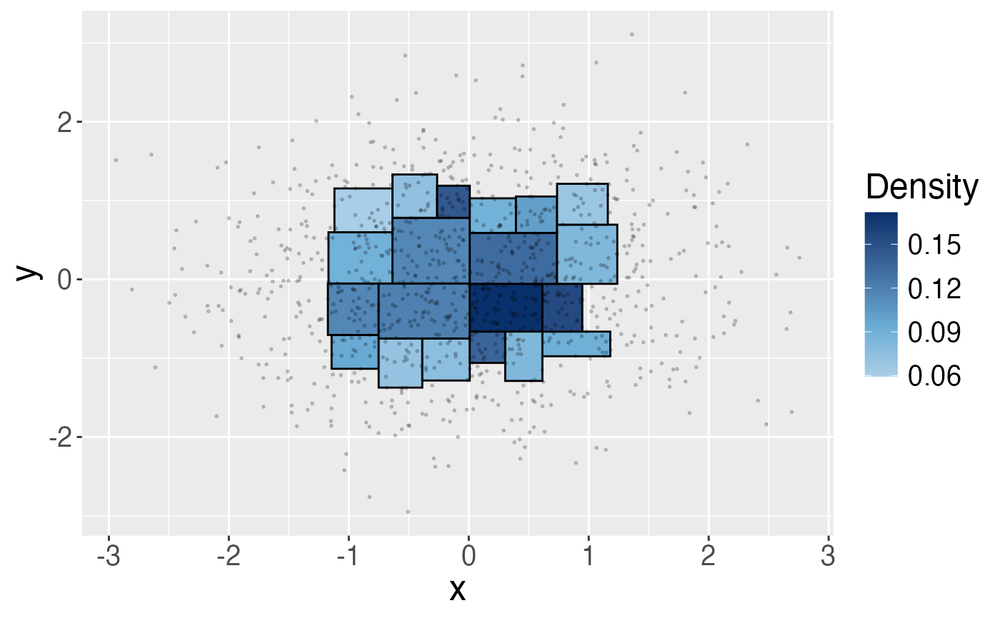

Build a Beta-tree histogram
BuildHist.RdCompute a Beta-tree histogram for multivariate data at a given confidence level.
Arguments
- X
A data matrix of size n by d.
- alpha
Significance level, default is
alpha = 0.1. The CI covers the average density in every region of the Beta-tree histogram simultaneously with probability \(1-\alpha\).- method
Use
method = "bonferroni"ormethod = "weighted_bonferroni"(default) to adjust for multiple inference.- bounded
If
bounded = TRUE, then create an initial bounding box according to user input parameters:- option
Define the bounding box by the order statistics (
option = ndat) or quantiles (option = qt) of observations to be excluded.- qt
A vector of length
dequal to the data dimension. Order statistics or quantiles of obs. to be excluded in each dimension. E.g. for 2-dim data,option = "ndat"andqt = c(50, 40), then the boundary in the x-axis are the 50-th and (n-50 +1)-th order statistics in the x-axis. The boundary in the y-axis is defined by the 40-th and \(n_1 - 40 + 1\) order statistics in the y-axis for the obs. inside the boundary defined by the x-axis in the previous step. Another way to put it is to exclude 50 obs. at the lower and upper end of x-coordinate, then for the obs. within, exclude 40 obs. at the lower and upper end of y-coordinate. Ifoption = "qt"andqt = c(0.05, 0.1), then the boundaries are defined by the \(\lceil 0.05 n \rceil\) and \(n - \lceil 0.05 n \rceil + 1\) quantiles in the x-axis, and then the \(\lceil 0.1 n_1 \rceil\) and \(n_1 - \lceil 0.1 n_1 \rceil + 1\) quantiles in the y-axis among observations in the first boundary defined by x-axis. Equivalently, exclude \(\lceil 0.05 n \rceil\) obs. at the lower and upper end of x-coordinate, then for the obs. within, exclude \(\lceil 0.1 n_1 \rceil\) obs. at the lower and upper end of the y-coordinate.
- plot
if
TRUE(default), plot the histogram if the data is two-dimensional.- ...
Additional parameter if
bounded = T.
Value
A matrix. Each row represents one region in the histogram. The first \(d\) columns are the lower bounds for the region; the next \(d\) columns are the upper bounds (\(d\) is data dimension); the \(2d+1\) column stores the empirical density in the region; the next two columns are the lower and upper confidence bounds of the average density in the region; the last two columns are the number of obs. inside the region and the depth of the node in the k-d tree.
Details
Construct the Beta-tree histogram by (1) iteratively partitioning the sample space along the sample median (similar to a k-d tree). (2) constructing simultaneous confidence intervals (at level \(1-\alpha\)) for all of the regions (adjust for multiple inference with Bonferroni or weighted Bonferroni adjustment). (3) selecting the largest bounded regions (w.r.t. inclusion) that pass a goodness of fit (GOF) test, i.e., the empirical density lies in all confidence intervals for the average densities of the rectangles contained in the region (i.e., descendants of the node in the k-d tree).
Examples
X <- matrix(rnorm(2000, 0, 1), ncol = 2)
B <- BuildHist(X)
# Plot the histogram
B <- BuildHist(X, plot = TRUE)

# Set significance level and multiple hypothesis testing correction
B <- BuildHist(X, alpha = 0.05, method = "weighted_bonferroni")
# Initialize a bounding box
B <- BuildHist(X, alpha = 0.05, method = "weighted_bonferroni",
bounded = TRUE, option = "ndat", qt = c(1,1))